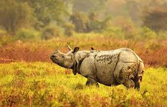
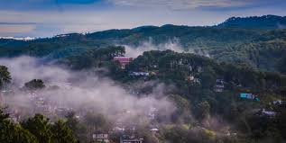
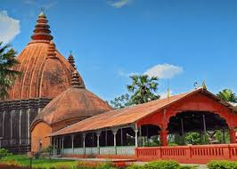

Kaziranga National Park

A UNESCO World Heritage Site famous for being home to two-thirds of the world's Great One-horned Rhinoceroses, offering thrilling jungle safaris.
Guwahati

The largest city in the state, serving as the gateway to Northeast India, known for the ancient Kamakhya Temple and its location on the banks of the Brahmaputra River.
Majuli

The world's largest river island (though its size is decreasing), famous as the cultural capital of Assam and the centre of the Neo-Vaishnavite culture with numerous 'Satras' (monasteries).
Manas National Park

Another UNESCO World Heritage Site, this park is known for its stunning scenic beauty and rare wildlife, including the Bengal Tiger, Pygmy Hog, and Golden Langur.
Sivasagar

A heritage city that was once the capital of the Ahom Kingdom, featuring historical monuments like the Shiva Dol (Shiva Temple) and the Rang Ghar (an ancient amphitheater).